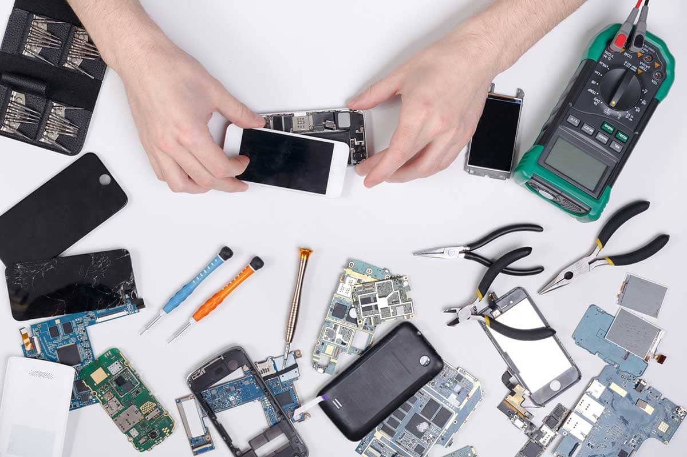
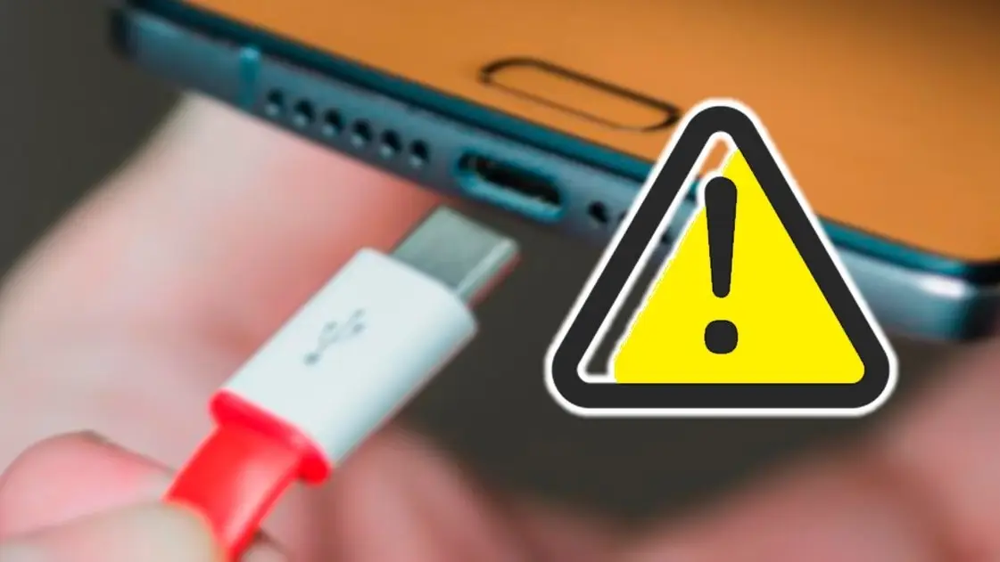

Problemas comunes de los celulares
La tecnología no siempre es perfecta, por lo que puedes experimentar distintos problemas que puedes solucionar por ti mismo. Los celulares pueden presentar fallas algunas veces y sabemos que puede ser una situación muy estresante. Es por esto que decidimos hacer un top 5 de los problemas más comunes de los celulares y cómo solucionarlos sin perder tu cabeza y tu dinero. Claramente hay distintos problemas que pueden ser un poco más difíciles de solucionar si no eres un experto en tecnología. Si no puedes hacerlo por ti mismo, te recomendamos llevar tu teléfono celular a un servicio técnico autorizado y con suerte ellos podrán ayudarte. Así que, te invitamos a que nos acompañes a descubrir cosas que quizá no conocías acerca de tu teléfono.
Top problemas de celulares mas comunes y como solucionarlos
- Teléfono Lento: Esto es algo que todos han experimentado al menos una vez. Es el problema telefónico más común y puede asociarse a los teléfonos más antiguos. Sin embargo, los dispositivos más nuevos pueden presentar el mismo problema. Cuando tu Memoria de Acceso Aleatorio (RAM) está llena de aplicaciones y archivos que no usas o necesitas, tu teléfono tiende a responder lentamente. La Solución: Limpia tu teléfono y cierra/elimina aplicaciones, archivos y limpia los datos de la memoria caché. Si instalaste recientemente una aplicación y tu teléfono no está funcionando bien, deberías desinstalarla y ver si tu teléfono responde más rápido. Si esto no te ayuda, también puedes intentar guardando información importante en Google Drive, Dropbox o en tu computadora. Luego puedes restablecer tu celular a los datos de fábrica.
- Teléfono Sobrecalentado: Este problema común puede estar relacionado al problema anterior. Un teléfono sobrecalentado está a veces asociado con la batería de tu teléfono. Pero, también puede relacionarse a tu cargador y el lugar donde normalmente tienes tu teléfono. Si estás experimentando esto, deberías solucionarlo pronto porque tu batería y tu teléfono pueden verse seriamente afectados. La Solución Deberías intentar las posibles soluciones dadas previamente y ver si el problema está directamente relacionado a tu problema de batería. Si continúa sobre calentándose, trata de llevar tu teléfono en un lugar fresco y mantenlo lejos del calor del sol. También puedes darle a tu teléfono unos minutos para “refrescarse” y volver a usarlo.
- Espacio de Almacenamiento Lleno: Quizá eres del tipo de personas que guarda muchas fotos, canciones, documentos y algunos otros archivos y aunque no los necesites más, no los eliminas. En ocasiones esos archivos son tan antiguos que olvidas que los tienes almacenados en tu celular. Las aplicaciones innecesarias ocupan un espacio importante que puede ser utilizado con otros fines. La Solución Este cuarto problema común puede estar relacionado al primero que mencionamos antes. Cuando tienes el espacio de almacenamiento lleno, tu teléfono tiende a responder lentamente. Por lo tanto, las posibles soluciones para este problema son las mismas: trata de eliminar esos archivos y aplicaciones que ya no usas, también puedes eliminar llamadas y mensajes viejos y limpiar los datos del la memoria caché. Intenta transferir esos archivos que te gustaría mantener contigo hacia una nube en línea o compra una tarjeta microSD para guardar esa información valiosa en un lugar seguro.
- Teléfono Mojado: No te sientas mal si se te cayó tu teléfono y ahora está mojado. Esto pasa a menudo y la mayor parte del tiempo puede solucionarse. La Solución Lo primero que NO debes hacer es encender tu dispositivo. Esto puede simplemente ser lo peor que hagas. Retira la batería y coloca el celular en un bowl lleno de arroz. Esto ayudará a que se absorba la humedad. Ahora, lleva el teléfono al taller de reparación y deja que ellos lo solucionen. 
- Puerto de Carga Dañado: Como todo en la vida, nada dura para siempre. Tu teléfono no es la excepción. Los puertos de carga tienden a deteriorarse con el pasar del tiempo. El mal uso o la suciedad pueden ser algunas de las causas de este deterioro. Este problema común necesita solucionarse por un experto. Sin embargo, puedes intentar alguna de estas cosas para ver si funciona de nuevo. La Solución Antes de llevar tu teléfono al servicio técnico, intenta limpiar el puerto de carga con un cepillo de dientes nuevo y seco. También puedes limpiarlo usando un hisopo seco para remover el polvo y la suciedad que no permite que tu puerto de carga funcione correctamente. Si esto no funciona, por favor llévalo al servicio técnico.